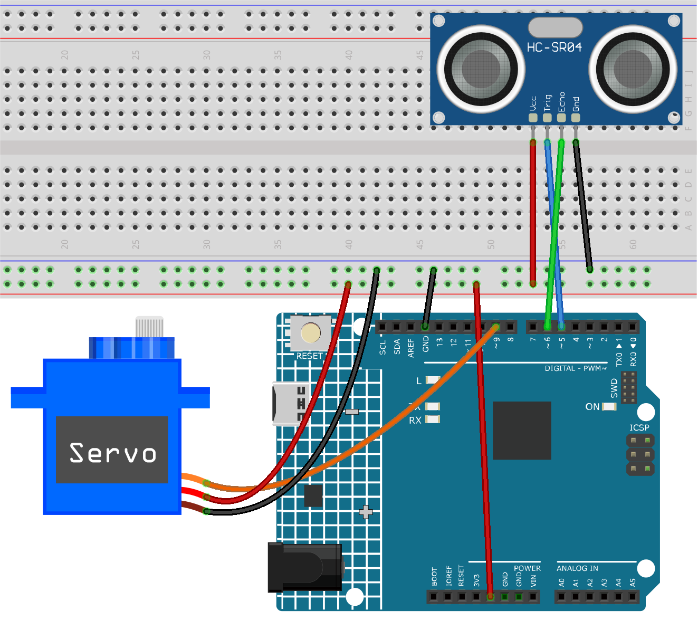

Note
Hello, welcome to the SunFounder Raspberry Pi & Arduino & ESP32 Enthusiasts Community on Facebook! Dive deeper into Raspberry Pi, Arduino, and ESP32 with fellow enthusiasts.
Why Join?
Expert Support: Solve post-sale issues and technical challenges with help from our community and team.
Learn & Share: Exchange tips and tutorials to enhance your skills.
Exclusive Previews: Get early access to new product announcements and sneak peeks.
Special Discounts: Enjoy exclusive discounts on our newest products.
Festive Promotions and Giveaways: Take part in giveaways and holiday promotions.
👉 Ready to explore and create with us? Click [here] and join today!
Smart trashcan
This project revolves around the concept of a smart trash can. The primary aim is to have the trash can’s lid automatically open when an object approaches within a set distance (20cm in this case). The functionality is achieved by using an ultrasonic distance sensor paired with a servo motor. The distance between the object and the sensor is continually measured. If the object is close enough, the servo motor is triggered to open the lid.
1. Build the Circuit


2. Code
Open the
01-Smart_trashcan.inofile under the path ofultimate-sensor-kit\code\fun_project\01-Smart_trashcan, or copy this code into Arduino IDE.
3. Code explanation
The project is based on real-time monitoring of the distance between an object and a trash can. An ultrasonic sensor continuously measures this distance, and if an object approaches within 20cm, the trash can interprets it as an intention to dispose of waste and automatically opens its lid. This automation adds smartness and convenience to a regular trash can.
Initial Setup and Variable Declaration
Here, we’re including the
Servolibrary and defining the constants and variables we’ll use. The pins for the servo and the ultrasonic sensor are declared. We also have an arrayaverDistto hold the three distance measurements.#include <Servo.h> Servo servo; const int servoPin = 9; const int openAngle = 0; const int closeAngle = 90; const int trigPin = 5; const int echoPin = 6; long distance, averageDistance; long averDist[3]; const int distanceThreshold = 20;
setup() Function
The
setup()function initializes serial communication, configures the ultrasonic sensor’s pins, and sets the initial position of the servo to the closed position.void setup() { Serial.begin(9600); pinMode(trigPin, OUTPUT); pinMode(echoPin, INPUT); servo.attach(servoPin); servo.write(closeAngle); delay(100); }
loop() Function
The
loop()function is responsible for continuously measuring the distance, computing its average, and then making a decision whether to open or close the trash can’s lid based on this averaged distance.void loop() { for (int i = 0; i <= 2; i++) { distance = readDistance(); averDist[i] = distance; delay(10); } averageDistance = (averDist[0] + averDist[1] + averDist[2]) / 3; Serial.println(averageDistance); if (averageDistance <= distanceThreshold) { servo.write(openAngle); delay(3500); } else { servo.write(closeAngle); delay(1000); } }
Distance Reading Function
This function,
readDistance(), is what actually interacts with the ultrasonic sensor. It sends a pulse and waits for an echo. The time taken for the echo is then used to calculate the distance between the sensor and any object in front of it.You can refer to the ultrasonic sensor principle in Principle.
float readDistance() { digitalWrite(trigPin, LOW); delayMicroseconds(2); digitalWrite(trigPin, HIGH); delayMicroseconds(10); digitalWrite(trigPin, LOW); float distance = pulseIn(echoPin, HIGH) / 58.00; return distance; }